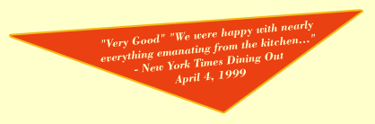

View our TV commercial
Opens in a new window.
Requires Macromedia Shockwave.
Download our Brochure
Requires Adobe Reader.
Welcome to the Trio Restaurant Web site.
We are located at 69 East Main Street in Patchogue, right next door to the Patchogue Theatre for the Performing Arts. Come visit us before or after a show.
The atmosphere is elegant; see your proprietor Kim Stahl for that perfect table.
Enjoy live music every friday night.
Best of all, Trio provides exquisite New American Cuisine. Every dish is a creation of Chef/Owner Kevin Stahl, so you know you are getting a sumptuous meal every time.
